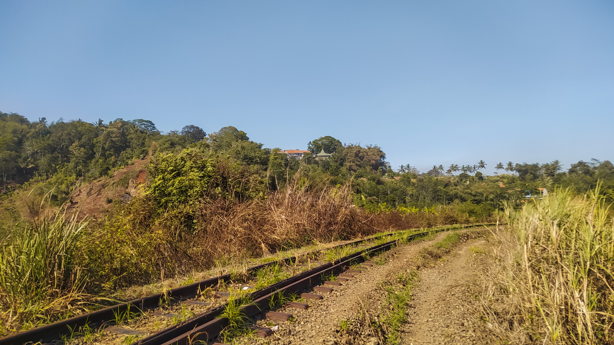

Bagaimana Nasib Jalur Kereta Api Cipatat-Padalarang?
Transport for Bandung • 7 Mei 2025
Jalur yang sebelumnya menjadi penghubung utama Jakarta-Bandung kini dibiarkan hancur pelan-pelan. Lantas, bagaimana nasibnya di masa depan?
Kelokan jalur nonaktif di timur Stasiun Cipatat, dipotret pada 2024.
Jalur Cipatat-Padalarang merupakan jalur lintas selatan Jawa yang dibangun sebagai bagian dari proyek jalur kereta api dari Bogor hingga Cicalengka pada masa pendudukan Belanda. Jalur ini menjadi penghubung pertama antara Jakarta dan Bandung, melalui Bogor, Sukabumi, dan Cianjur. Sayangnya, sejak 2013, jalur ini dibiarkan mati. Meskipun berbagai pihak menyebut statusnya sebagai "semiaktif", melihat kondisinya sekarang, jalur ini lebih pantas disebut sebagai jalur nonaktif.
Banyak hal disebut-disebut menjadi alasan jalur ini ditutup. Alasan yang paling sering disebut ialah gradien yang curam dan radius lengkung yang kecil/tajam. Dilansir dari dokumen Grafik Perjalanan Kereta Api di Jawa Tahun 2025, radius lengkung minimum di jalur Cipatat-Padalarang ialah sebesar 150 meter, sama dengan beberapa petak jalan lain, seperti Nagreg-Lebakjero dan Bumiwaluya-Cipeundeuy. Sementara itu, lereng penentu curam berada di petak Padalarang-Tagogapu, yakni sebesar 40‰. Angka ini lebih besar dibanding semua jalur lintas pegunungan di Daop 2, bahkan lebih curam dibandingkan petak Nagreg-Lebakjero yang terkenal karena seringnya lokomotif kereta api selip ketika melalui petak ini.
Beberapa kali jalur ini direncanakan beroperasi, salah satunya dengan rencana kereta api Kian Santang pada 2015. Sayangnya, rencana tersebut batal terealisasi. Beberapa kali pula lori melintas di jalur ini, tetapi sekarang sudah tidak lagi.
Kondisi saat ini
Berdasarkan penelusuran yang dilakukan oleh tim Transport for Bandung sejak 2023, jalur ini telah beralih fungsi dan terdampak rintangan jalan. Segmen antara Stasiun Padalarang dan perlintasan sebidang Jalan Cihaliwung telah menjadi tempat penumpukan bantalan dan garasi sarana perawatan rel KAI. Beberapa titik juga dikabarkan mengalami longsoran. Transport for Bandung sempat mendokumentasikan satu titik longsor, beberapa kilometer dari Stasiun Cipatat.
Vegetasi di sepanjang jalur juga mulai tumbuh lebat. Segmen paling "subur" ialah petak antara Tagogapu dan Cipatat yang tertimbun tanah dan semak belukar. Demikian pula di petak jalan Padalarang-Tagogapu, tampak sinyal masuk dan muka aktif Stasiun Padalarang yang seperti melayani jalur hantu.
Selain alam, perubahan di jalur kereta api juga berasal dari aktivitas manusia. Beberapa bagian jalur juga telah menjadi jalan akses bagi penduduk ke ladang atau kampung lain. Bukan tidak mungkin, permukiman semakin padat, lalu pemangku kepentingan melontarkan argumen: "jalur ini sulit direaktivasi karena harus menertibkan permukiman warga."
Terdapat pula dua underpass yang relatif baru di sekitar Tagogapu. Satu underpass di barat laut dibangun oleh perusahaan Damwoo menuju tambang kapurnya. Satu underpass lagi di sisi tenggara, kemungkinan menjadi bagian dari rencana kampus baru Universitas Parahyangan.
Tagogapu, sebagai satu-satunya stasiun di tengah segmen nonaktif ini, kondisinya memprihatinkan. Wesel, sebagian jalur, dan aspek sinyal telah hilang atau dicabut. Meskipun demikian, bangunan stasiun masih dirawat oleh petugas KAI.
Reaktivasi?
Menurut Gubernur Jawa Barat Dedi Mulyadi, jalur ini merupakan salah satu jalur KA di Jabar yang akan direaktivasi. Namun pertanyaannya, reaktivasi seperti apa yang dimaksud?
Reaktivasi jalur Cipatat-Padalarang memang sudah direncanakan sejak beberapa tahun yang lalu. Pada 2023, Kementerian Perhubungan melalui Direktorat Jenderal Perkeretaapian (DJKA) memulai proses detail engineering design (DED) untuk trase baru dari Cipatat menuju Sasaksaat, menghindari curamnya jalur via Tagogapu. Namun, hilal pembangunan tidak kunjung datang. Data yang dipublikasikan hanyalah gambaran trase, jumlah jembatan, dan jumlah terowongan yang kemungkinan besar belum final. Di lapangan, hanya tampak patok yang digunakan sebagai benchmark survei geodetik oleh DJKA di sekitar lokasi rencana trase baru.
Sayangnya, hingga kini belum ada informasi yang benar-benar menjelaskan masa depan jalur Cipatat-Padalarang, baru sebatas janji semata. Padahal, jalur ini berpotensi meningkatkan koneksi antara Bandung dan Priangan Barat. Keberadaan jalur ini juga memungkinkan koneksi langsung kereta api jarak jauh menuju Bogor, hitung-hitung turut meramaikan jalur ganda yang “telanjur” dibangun tanpa pertimbangan skala prioritas di segmen Bogor-Cicurug.